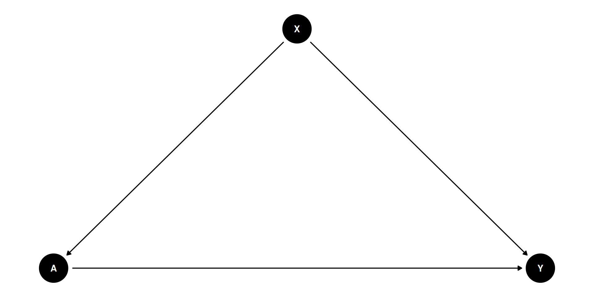
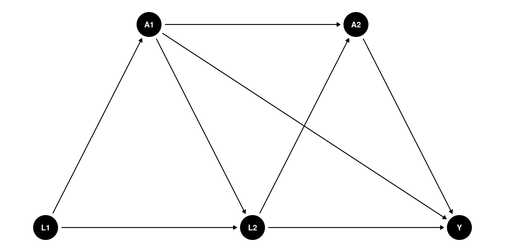

Evans, R. J., & Didelez, V. (2024). “Parameterizing and simulating from causal models” is about simulating from a causal model. I found that interesting.
The usual causal inference is to have a observational data, then assume causal structure, then estimate the parameters. This paper is about the opposite: Suppose we have a causal model, what kind of distribution would generate it?
Suppose we are interested in joint distribution \(p(x,a,y)\), \(x\) is covariates, \(a\) is treatment, \(y\) is outcome.
\[ \begin{align} p(x,a,y) &= p(x,a)p(y|x,a) \\ &= p(x,a)p_a(y|x) \\ &= p(x,a)\frac{p_a(x,y)}{p_a(x)} \\ &= p(x,a)\frac{p_a(x)p_a(y)c(x,y|a)}{p_a(x)} \\ &= p(x,a)p_a(y)c(x,y|a) \end{align} \]
Basically the joint distribution of \((x,a,y)\) can be factorized into the marginal distribution of \((x,a)\), the conditional distribution of \(y\) given \(x\) and \(a\), and the copula \(c(x,y|a)\). The copula is a function that captures the dependence between \(x\) and \(y\) given \(a\). \((x,a)\) is the “past”, which can be specified. \(p_a(y)\) is the “marginal structure model” which can be specified. The copula model can also be specified.
About copula: copula is a function can link joint distribution to marginal distributions.
\[ p(x,y) = f(x)g(y)c(F(x),G(y)) \]
where \(F(x)\) and \(G(y)\) are the marginal distributions of \(x\) and \(y\), respectively, and \(c\) is the copula function that captures the dependence between \(x\) and \(y\). The copula function is a multivariate distribution with uniform marginals. It can be used to generate joint distributions from marginal distributions.
Here \(x\), \(a\) and \(y\) can all be vectors.
examples
What do we use this for? We can use this to simulate data from a causal model, and then fit different models to the simulated data. This allows to compare the performance of different models.
example 1
Suppose we have a causal graph like this:
We need to specify \(P(y|do(a)) = \sum_x P(x) P(y|x,a)\), where \(P(x)\) is the marginal distribution of \(x\), and \(P(y|x,a)\) is the conditional distribution of \(y\) given \(x\) and \(a\). This is the “marginal structural model” (Robins, 2000). Also the “g-formula”.
We also need to specify \(P(x,a)\), the “past”.
Finally we need to specify the copula \(c(x,y|a)\), which captures the dependence between \(x\) and \(y\) given \(a\). Depending on different situations, different copula can be used.
In the “causl” package example, we specify: \[ X \sim N(0,1) \] \[ A | X=x \sim N(x/2, 1) \] \[ Y | do(A=a) \sim N({(a-1)/2}, 1) \] and Gaussian copula with correlation \(\rho = 2 expit(1)-1\).
library(causl)
# formulae corresponding to covariates, treatments, outcomes and the dependence
forms <- list(X ~ 1, A ~ X, Y ~ A, ~ 1)
# vector of model families (3=gamma/exponential, 1=normal/Gaussian)
fam <- c(1, 1, 1, 1)
# list of parameters, including 'beta' (regression params) and 'phi' dispersion
pars <- list(X = list(beta=0, phi=1),
A = list(beta=c(0,0.5), phi=1),
Y = list(beta=c(-0.5,0.5), phi=1),
cop = list(beta=1))
## now create a `causl_model` object
cm <- causl_model(formulas=forms, family=fam, pars=pars,method="inversion")
# now simulate 1000 observations
set.seed(123456)
data <- rfrugal(n=1000, causl_model=cm)
head(data) X A Y
1 0.83373317 1.10709111 1.1416713
2 -0.27604777 -0.27218853 -1.0495996
3 -0.35500184 0.77575209 1.3179678
4 0.08748742 -0.05959823 -0.6106023
5 2.25225573 0.61909216 2.0789188
6 0.83446013 0.52019822 0.3229069In this example, first we specify the structure of the model using a list of formulas. The first formula is for the covariates, the second for the treatments, the third for the outcomes, and the fourth for the dependence structure (copula). Note that outcome \(Y\) only depends on \(A\) in this interventional distribution.
Then we specify the families of the random variables. Here we use exponential distribution for \(X\), normal distribution for \(A\) and \(Y\), and Gaussian copula for the dependence structure.
Finally we specify the parameters of the model, including regression coefficients and dispersion parameters. For example, \(Y \sim A\) has two coefficients, intercept -.5 and slope .5.
The causl_model object is then created using these components.
In this simple example, if we run a regression with \(A\), \(X\) in the model, on the simulated data, we would get the correct effect back:
lm1 <- lm(Y ~ A*X, data=data)
summary(lm1)
Call:
lm(formula = Y ~ A * X, data = data)
Residuals:
Min 1Q Median 3Q Max
-2.6326 -0.6212 -0.0105 0.6051 3.3132
Coefficients:
Estimate Std. Error t value Pr(>|t|)
(Intercept) -0.491922 0.030413 -16.175 <2e-16 ***
A 0.493471 0.027820 17.738 <2e-16 ***
X 0.468038 0.031878 14.682 <2e-16 ***
A:X -0.009247 0.022360 -0.414 0.679
---
Signif. codes: 0 '***' 0.001 '**' 0.01 '*' 0.05 '.' 0.1 ' ' 1
Residual standard error: 0.8953 on 996 degrees of freedom
Multiple R-squared: 0.4875, Adjusted R-squared: 0.4859
F-statistic: 315.8 on 3 and 996 DF, p-value: < 2.2e-16We can also use MLE:
out <- fit_causl(data, formulas = list(X ~ 1, Y ~ A, ~ 1), family = c(1, 1, 1))
outlog-likelihood: -2716.696
X ~ 1
est. s.e. sandwich
(intercept) 0.0108 0.0314 0.0314
residual s.e.: 0.983 0.044 0.0447
Y ~ A
est. s.e. sandwich
(intercept) -0.491 0.0319 0.0319
A 0.494 0.0278 0.0295
residual s.e.: 1.01 0.0472 0.0475
copula parameters:
cop ~ 1
est. s.e. sandwich
(intercept) 0.998 0.069 0.0734Plasmode simulation
In reality, we have a data set and we have a causal model. We want to simulate data from the causal model, but we want the simulated data to have the same distribution as the original data. This is called “plasmode simulation”. For example, we don’t want to use the real outcome variable. In stead, we simulate X’s from the original data, Then simulate Y and A from the causal model. We can then test which method works better in estimating the causal effect of \(A\) on \(Y\).
# A tibble: 4,802 × 58
x_1 x_2 x_3 x_4 x_5 x_6 x_7 x_8 x_9 x_10 x_11 x_12 x_13
<int> <fct> <dbl> <dbl> <int> <int> <int> <int> <int> <int> <int> <int> <int>
1 29 C 1 7 60 85 0 0 1 0 0 1 0
2 27 C 0 0 64 178 0 0 0 0 0 2 1
3 27 C 0 0 60 102 0 0 0 0 0 1 0
4 37 C 0 0 65 174 0 0 0 0 0 1 0
5 24 C 20 14 63 129 0 0 0 0 0 1 0
6 27 C 40 15 63 135 0 0 0 0 0 1 1
7 26 C 20 8 69 140 0 0 0 1 0 0 0
8 33 C 0 0 60 110 0 0 0 1 0 0 1
9 28 C 3 5 61 160 0 0 0 0 0 3 1
10 31 C 0 0 63 114 0 1 0 0 0 0 0
# ℹ 4,792 more rows
# ℹ 45 more variables: x_14 <int>, x_15 <int>, x_16 <int>, x_17 <int>,
# x_18 <int>, x_19 <int>, x_20 <int>, x_21 <fct>, x_22 <int>, x_23 <int>,
# x_24 <fct>, x_25 <int>, x_26 <int>, x_27 <int>, x_28 <int>, x_29 <int>,
# x_30 <int>, x_31 <int>, x_32 <int>, x_33 <int>, x_34 <int>, x_35 <int>,
# x_36 <int>, x_37 <int>, x_38 <int>, x_39 <int>, x_40 <int>, x_41 <int>,
# x_42 <int>, x_43 <int>, x_44 <int>, x_45 <int>, x_46 <int>, x_47 <int>, …# Model for the causal effect of smoking on birthweight
forms <- list(list(),
list(A ~ x_1 + x_3 + x_4),
list(Y ~ A),
list(~ 1))
# fams <- list(integer(0), 5, 1, 1)
fams <- list(integer(0), "binomial", "gaussian", 1)
pars <- list(A = list(beta=c(-1.5,0.03,0.02,0.05)),
Y = list(beta=c(3200, -500), phi=400^2),
cop = list(beta=-1))
cm2 <- causl_model(formulas=forms, family=fams, pars=pars, dat = dat)
set.seed(123456)
data2 <- rfrugal(causl_model=cm2)
head(data2) x_1 x_2 x_3 x_4 x_5 x_6 x_7 x_8 x_9 x_10 x_11 x_12 x_13 x_14 x_15 x_16 x_17
1 29 C 1 7 60 85 0 0 1 0 0 1 0 0 2 0 0
2 27 C 0 0 64 178 0 0 0 0 0 2 1 0 2 0 0
3 27 C 0 0 60 102 0 0 0 0 0 1 0 0 0 0 0
4 37 C 0 0 65 174 0 0 0 0 0 1 0 0 1 0 0
5 24 C 20 14 63 129 0 0 0 0 0 1 0 0 0 0 0
6 27 C 40 15 63 135 0 0 0 0 0 1 1 2 2 0 0
x_18 x_19 x_20 x_21 x_22 x_23 x_24 x_25 x_26 x_27 x_28 x_29 x_30 x_31 x_32
1 12 35 10 J 1 43 B 17 64 105 30 11 0 0 0
2 12 75 12 J 1 50 E 12 90 183 40 8 0 0 0
3 12 35 10 J 1 57 E 14 70 121 27 12 0 0 0
4 11 35 12 J 1 43 E 10 80 185 39 10 0 0 0
5 9 35 15 J 1 33 E 14 70 160 28 7 0 0 0
6 9 45 10 J 1 40 E 15 64 160 31 9 0 0 0
x_33 x_34 x_35 x_36 x_37 x_38 x_39 x_40 x_41 x_42 x_43 x_44 x_45 x_46 x_47
1 0 79 28 340 48 1 9 9 3 0 3 54 16 0 0
2 0 69 30 430 73 0 9 9 3 0 5 51 16 0 0
3 0 84 29 450 76 0 3 6 2 0 4 41 13 0 0
4 0 82 30 440 78 1 8 9 2 0 8 70 16 0 0
5 1 85 35 360 71 1 5 8 0 2 3 65 18 0 0
6 1 81 28 515 56 1 7 9 2 0 1 63 20 0 0
x_48 x_49 x_50 x_51 x_52 x_53 x_54 x_55 x_56 x_57 x_58 A Y
1 0 0 0 0 0 0 0 0 0 45 39 1 2125.677
2 0 0 0 0 0 0 0 0 0 46 42 1 2688.990
3 0 1 0 0 0 0 0 0 0 45 40 0 3442.924
4 0 0 0 0 0 0 0 0 0 47 40 0 3212.584
5 0 2 0 0 0 0 0 0 0 47 43 0 2992.775
6 0 0 0 0 0 0 0 0 0 45 44 0 2738.893# we can also use rfrugalParam(), which is older version of rfrugal().
#datAY <- rfrugalParam(formulas=forms, family=fams, pars=pars, dat=dat)In this specification, we have a binary treatment \(A\) and a continuous outcome \(Y\). The covariates are \(x_1\), \(x_3\) and \(x_4\). The copula is a Gaussian copula with correlation -1. We can then simulate the data.
a more complicated model
Let’s simulate a more complicated model:
library(ggplot2)
library(ggdag)
g <- dagify(
A1 ~ L1,
L2 ~ L1,
L2 ~ A1,
A2 ~ A1,
A2 ~ L2,
Y ~ A2,
Y ~ L2,
Y ~ A1,
exposure = "A2",
outcome = "Y",
coords = list(x = c(L1 = 1, L2 = 2, Y = 3, A1 = 1.5, A2 = 2.5),
y = c(L1 = 1, L2 = 1, Y = 1, A1 = 1.5, A2 = 1.5))
)
ggdag(g) +
theme_dag() 
Let’s see how to write a causal model:
# formulae corresponding to covariates, treatments, outcomes and the dependence
forms <- list(list(L1 ~ 1, L2 ~ L1*A1), # covariates
list(A1 ~ L1, A2 ~ L2*A1), # treatments
Y ~ A1*A2*L2, # outcome
~ 1)
# vector of model families (3=gamma/exponential, 1=normal/Gaussian)
fams <- list(c(1, 1), c(5,5), 1, 1)
pars <- list(L1 = list(beta=0, phi=1),
L2 = list(beta=c(0.3,0.5,-0.2,-0.1), phi=1),
A1 = list(beta=c(-0.3,0.4), phi=1),
A2 = list(beta=c(0.5,0.3,0.1,0), phi=1),
Y = list(beta=c(0,1,2,0.5,1,0.2,0,0.8), phi=1),
cop = list(beta = 0.5))
# we can use rfrugalParam() to simulate data from the model, or rfrugal().
#dat <- rfrugalParam(n=1e4, formulas=forms, family = fams, pars=pars)
#head(dat)
cm3 <- causl_model(formulas=forms, family=fams, pars=pars)
set.seed(123456)
data3 <- rfrugal(n=1e4,causl_model=cm3)
head(data3) L1 L2 A1 A2 Y
1 0.83373317 1.91691936 1 1 8.1680612
2 -0.27604777 0.17008294 1 1 5.2276976
3 -0.35500184 0.16907708 1 1 2.8194835
4 0.08748742 0.19688985 0 1 2.6789661
5 2.25225573 -0.29257431 0 0 0.3180188
6 0.83446013 0.02661196 0 1 1.5694426If we have the correct specification for the outcome model, we’ll get it right by linear model:
m1 <- glm(Y ~ A1*A2*L2, data = data3)
summary(m1)
Call:
glm(formula = Y ~ A1 * A2 * L2, data = data3)
Coefficients:
Estimate Std. Error t value Pr(>|t|)
(Intercept) -0.11524 0.02110 -5.461 4.85e-08 ***
A1 1.11589 0.03245 34.391 < 2e-16 ***
A2 2.02332 0.02682 75.454 < 2e-16 ***
L2 0.80424 0.01929 41.682 < 2e-16 ***
A1:A2 0.98345 0.04090 24.044 < 2e-16 ***
A1:L2 0.16028 0.02976 5.386 7.37e-08 ***
A2:L2 -0.03446 0.02401 -1.435 0.151
A1:A2:L2 0.83541 0.03693 22.620 < 2e-16 ***
---
Signif. codes: 0 '***' 0.001 '**' 0.01 '*' 0.05 '.' 0.1 ' ' 1
(Dispersion parameter for gaussian family taken to be 0.9100255)
Null deviance: 53902 on 9999 degrees of freedom
Residual deviance: 9093 on 9992 degrees of freedom
AIC: 27446
Number of Fisher Scoring iterations: 2library(marginaleffects)
avg_comparisons(
model = m1,
variables = "A2")
Estimate Std. Error z Pr(>|z|) S 2.5 % 97.5 %
2.51 0.0202 124 <0.001 Inf 2.47 2.55
Term: A2
Type: response
Comparison: 1 - 0So the ATE is 2.5.
Let’s use “lmtp” package to estimate the treatment effect of \(A_2\) on \(Y\).
library(lmtp)
d1 <- function(data, trt) {
rep(1, nrow(data))
}
A <- "A2"
Y <- "Y"
W <- c("L1", "L2", "A1")
set.seed(34465)
treat <- lmtp_tmle(
data = data3,
trt = "A2",
outcome = "Y",
baseline = W,
outcome_type = "continuous",
shift = d1,
folds = 1,
learners_trt = "SL.glm",
learners_outcome = "SL.glm"
)
print(treat)::: {.cell-output .cell-output-stdout}
Estimate: 3.046
Std. error: 0.022d2 <- function(data, trt) {
rep(0, nrow(data))
}
control <- lmtp_tmle(
data = data3,
trt = "A2",
outcome = "Y",
baseline = W,
outcome_type = "continuous",
shift = d2,
folds = 1,
learners_trt = "SL.glm",
learners_outcome = "SL.glm"
)
print(control)::: {.cell-output .cell-output-stdout}
Estimate: 0.542
Std. error: 0.021:::
lmtp_contrast(treat, ref = control)::: {.cell-output .cell-output-stdout}
shift ref estimate std.error conf.low conf.high p.value
1 3.05 0.542 2.5 0.0227 2.46 2.55 <0.001::: :::